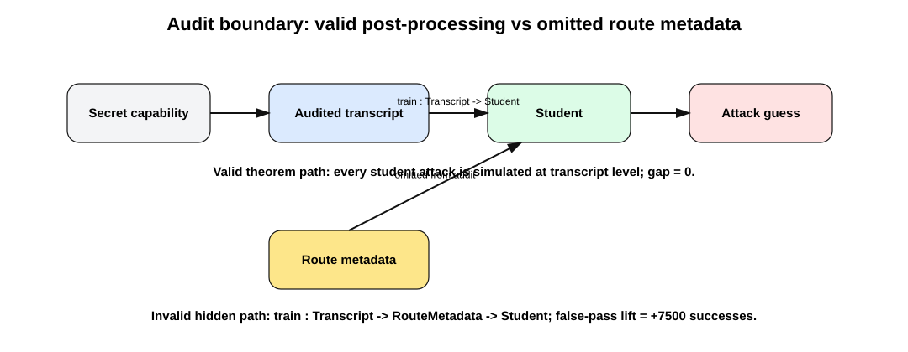
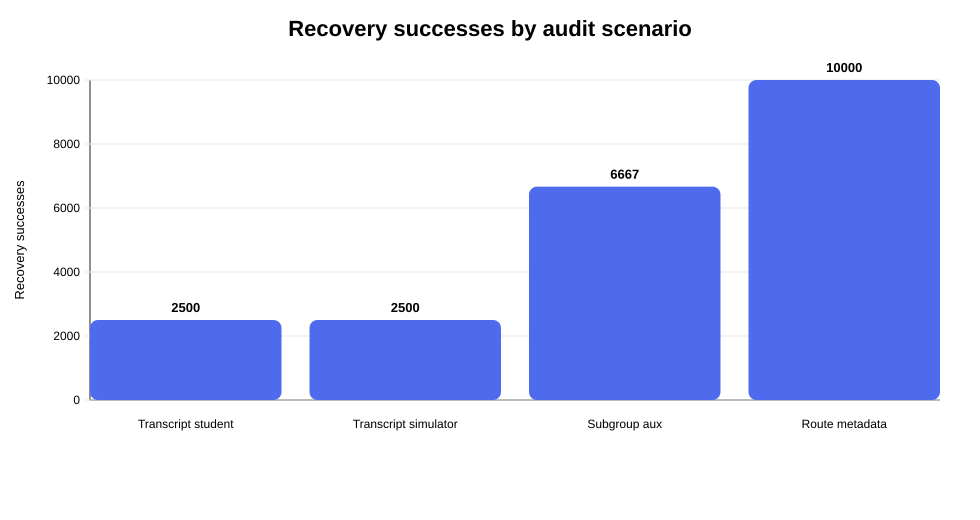
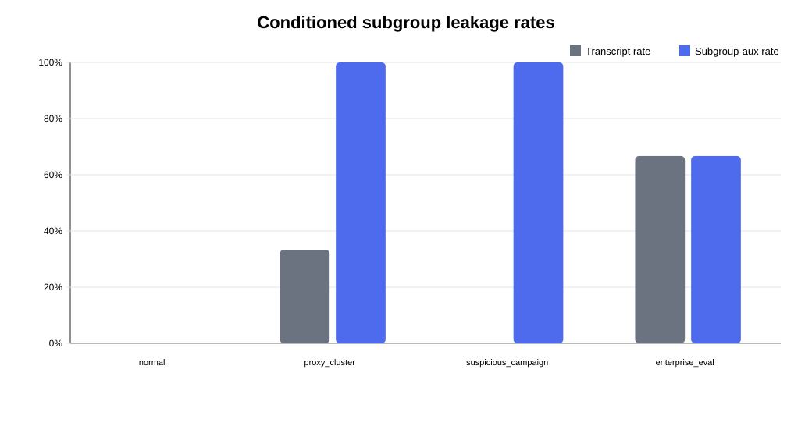

Lean build: PASS
Forbidden-token audit: PASS
MLX proof-matched experiment: PASS
Route-metadata false pass: True
If a student artifact is a deterministic function of the audited transcript, every finite recovery attack on the student has an equivalent transcript-level simulator with exactly the same empirical success.
The MLX experiment demonstrates the failure mode: if the real pipeline uses omitted route metadata, the theorem does not apply and the transcript-only audit can falsely pass.



| Lean theorem or obligation | Experimental meaning | Metric | Observed | Expected | Verdict |
|---|---|---|---|---|---|
| postprocess_successCount_eq | Deterministic student attack equals transcript simulator. | deterministic_student_minus_transcript_simulator_success | 0 | 0 | PASS |
| conditional_student_attack_lifts_to_transcript | Post-processing equality holds for every conditioned subgroup. | all conditional deterministic_gap values | {"enterprise_eval": 0, "normal": 0, "proxy_cluster": 0, "suspicious_campaign": 0} | all 0 | PASS |
| candidateBest_postprocess_eq_lifted | Best finite candidate attack is unchanged after lifting. | candidate_best_gap | 0 | 0 | PASS |
| InfoTheory.deterministic_dpi_exact | Finite code-cost DPI equality holds. | code_cost_gap | 0 | 0 | PASS |
| InfoTheory.fanoStyle_valid_student_to_transcript | Fano-style certificate transfers from student to transcript. | fano validity | student=True; transcript=True | both true | PASS |
| PAC.monteCarlo_transcript_pass_implies_student_pass | Monte Carlo pass transfers from transcript simulator to deterministic student. | Monte Carlo pass | student=True; transcript=True | both true | PASS |
| outside theorem precondition | Route metadata is omitted from transcript, so theorem does not apply. | route_metadata_false_pass_under_transcript_audit | True | true | PASS |
| Quantity | Value | Interpretation |
|---|---|---|
| Population size | 10000 | Finite audit population. |
| Transcript successes | 2500 | Recovery using audited transcript boundary. |
| Transcript simulator successes | 2500 | Simulator from the same boundary. |
| Route metadata successes | 10000 | Recovery using omitted route metadata. |
| Subgroup auxiliary successes | 6667 | Recovery when auxiliary metadata is subgroup-concentrated. |
| Route-metadata lift | 7500 | Additional successes caused by omitted route metadata. |
| Monte Carlo budget | 2700 | Allowed successes under transcript-only audit. |
| Group | Total | Transcript rate | Subgroup-aux rate | Deterministic gap | Interpretation |
|---|---|---|---|---|---|
| normal | 2500 | 0.0 | 0.0 | 0 | post-processing equality holds |
| proxy_cluster | 2500 | 0.3332 | 1.0 | 0 | auxiliary route metadata raises recovery |
| suspicious_campaign | 2500 | 0.0 | 1.0 | 0 | auxiliary route metadata raises recovery |
| enterprise_eval | 2500 | 0.6668 | 0.6668 | 0 | post-processing equality holds |
The core post-processing, distillation, finite DPI, Fano-style, and Monte Carlo transfer theorems are reported as not depending on project-specific axioms. Some candidate-class list/simp theorems mention Lean's standard propext and Quot.sound; these are kernel-level logical principles used by Lean's equality/simplification infrastructure, not hidden privacy, independence, Gaussian, Shannon, or rate-distortion assumptions.
This artifact mechanizes a finite recovery/privacy audit framework. It does not claim full Shannon entropy, KL divergence with real logarithms, Gaussian maximum entropy, or Gaussian rate-distortion formalization.